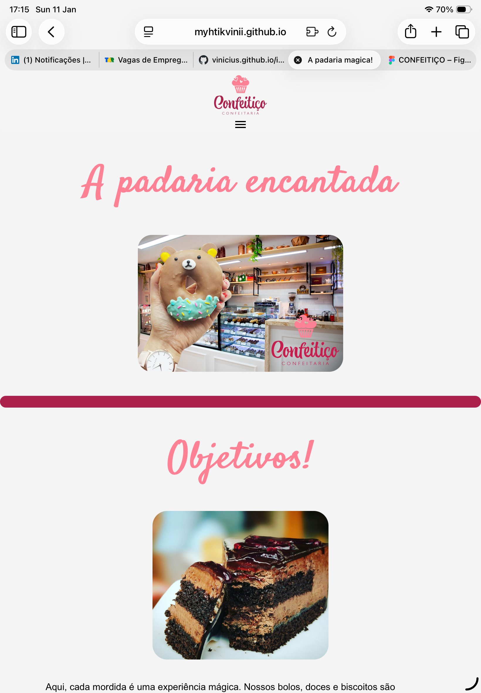
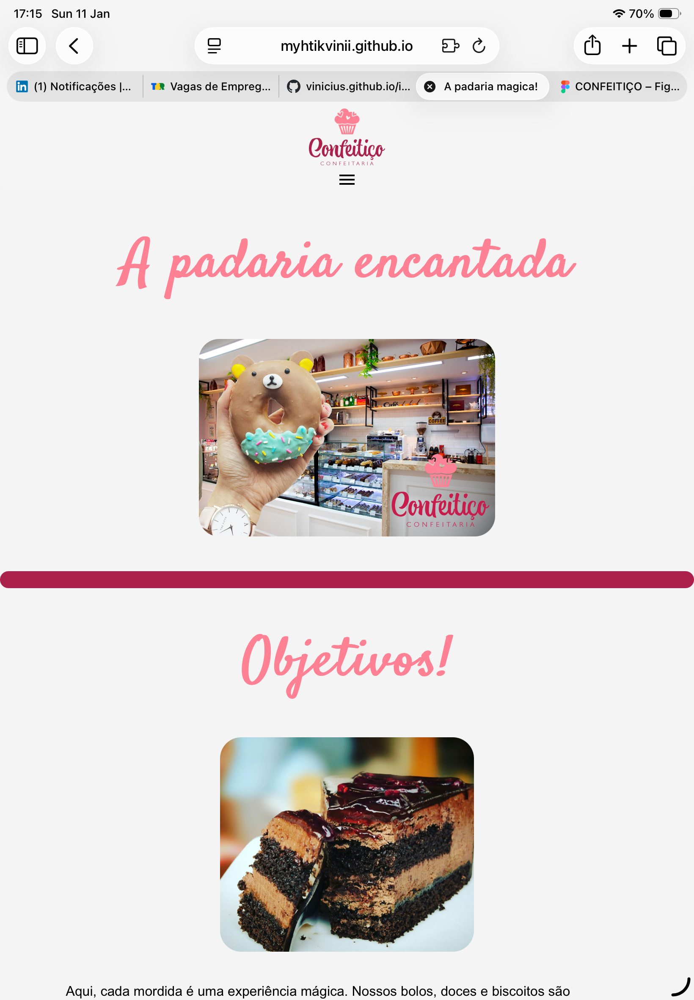

Confeitiço
Projeto de site desenvolvido para uma confeitaria fictícia
Sobre o projeto
O Confeitiço foi desenvolvido com o objetivo de criar uma identidade visual moderna e atrativa para uma confeitaria, layout simples e navegação intuitiva. O projeto simula um site real, pensado para divulgação de produtos e contato com clientes.
Visual do site
Processo de criação
O desenvolvimento começou pelo design visual, definindo paleta de cores, tipografia e estrutura das seções. Em seguida, o layout foi implementado utilizando HTML e CSS, priorizando responsividade e clareza visual.

 

LINKS
Conclusão
Este projeto foi essencial para treinar organização de layout, estilização com CSS e estruturação de páginas completas. Ele também representa minha evolução na criação de interfaces visuais funcionais e agradáveis.